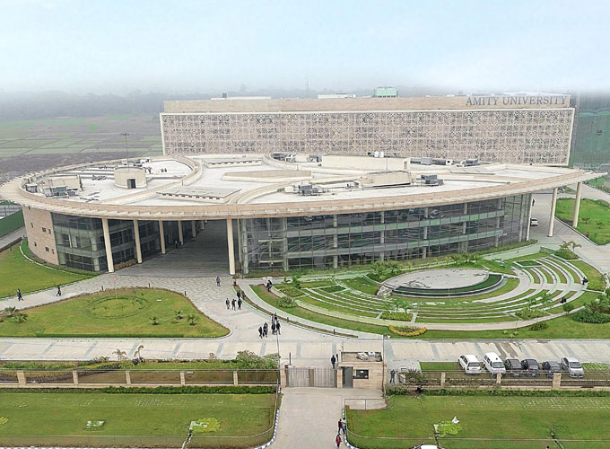

Home
About Amity Kolkata
About Us
The Amity University Act, 2014 (West Bengal Act, XXIV of 2014) has been passed by the Legislative Assembly of West Bengal in 2014. The Amity University Act, 2014 has been published in the Kolkata Gazette on 21.1.2015 vide the Law Department Notification No. 83L dated 21.1.2015.
Amity University Kolkata is a part of 20-year old, leading education group of India, set up with a vision to contribute to nation-building through education, where currently 100,000+ students are pursuing 250 programmes across campuses in India and abroad.

Amity University Kolkata is yet another landmark project by Amity to revolutionize the Indian higher education Sector by providing globally benchmarked, research and employment oriented education.
- Sprawling green campus with globally benchmark facilities comparable to by Ivy league Universities.
- Industry-oriented academic programmes with flexible credit system, combining technical education with liberal arts.
- 11 research centres in Bio-design, Computer Graphic, Decisions & Ethics, Design Research, Information Technology, Financial Analytics, Robotics, Computer Research In Music & Acoustics, Humanities, Language & Information, Applied & Behavioral Sciences.
